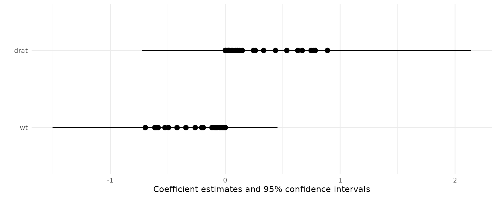

Marginal effects
We can summarize the results of the comparisons() or marginaleffects() functions using the modelsummary package.
library(modelsummary)
library(marginaleffects)
mod <- glm(am ~ wt + drat, family = binomial, data = mtcars)
mfx <- marginaleffects(mod)
modelsummary(mfx)| Model 1 | |
|---|---|
| wt | −0.217 |
| (0.080) | |
| drat | 0.278 |
| (0.168) | |
| Num.Obs. | 32 |
| AIC | 22.0 |
| BIC | 26.4 |
| Log.Lik. | −8.011 |
| F | 3.430 |
| RMSE | 0.28 |
The same results can be visualized with modelplot():
modelplot(mfx)
Contrasts
Note: The code in this section requires a version of the modelsummary package greater than 1.2.0. If it is not available from CRAN, you can install the development version by following the instructions on the modelsummary website.
When using the comparisons() function (or the marginaleffects() function with categorical variables), the output will include two columns to uniquely identify the quantities of interest: term and contrast.
dat <- mtcars
dat$gear <- as.factor(dat$gear)
mod <- glm(vs ~ gear + mpg, data = dat, family = binomial)
cmp <- comparisons(mod)
tidy(cmp)
#> type term contrast estimate std.error statistic p.value
#> 1 response gear 4 - 3 0.03717842 0.13656702 0.2722357 7.854408e-01
#> 2 response gear 5 - 3 -0.33968823 0.09882783 -3.4371718 5.878226e-04
#> 3 response mpg +1 0.06080995 0.01283781 4.7367850 2.171353e-06
#> conf.low conf.high
#> 1 -0.23048802 0.3048449
#> 2 -0.53338721 -0.1459892
#> 3 0.03564831 0.0859716We can use the group argument of the modelsummary function to structure the table properly:
modelsummary(cmp, group = term + contrast ~ model)| contrast | Model 1 | |
|---|---|---|
| gear | 4 - 3 | 0.037 |
| 4 - 3 | (0.137) | |
| 5 - 3 | −0.340 | |
| 5 - 3 | (0.099) | |
| mpg | +1 | 0.061 |
| +1 | (0.013) | |
| Num.Obs. | 32 | |
| AIC | 26.2 | |
| BIC | 32.1 | |
| Log.Lik. | −9.101 | |
| F | 2.389 | |
| RMSE | 0.31 |
Cross-contrasts can be a bit trickier, since there are multiple simultaneous groups. Consider this example:
mod <- lm(mpg ~ factor(cyl) + factor(gear), data = mtcars)
cmp <- comparisons(
mod,
variables = c("gear", "cyl"),
cross = TRUE)
tidy(cmp)
#> type term contrast_gear contrast_cyl estimate std.error statistic
#> 1 response cross 4 - 3 6 - 4 -5.331884 2.768998 -1.925564
#> 2 response cross 4 - 3 8 - 4 -9.218116 3.618491 -2.547503
#> 3 response cross 5 - 3 6 - 4 -5.155797 2.630642 -1.959901
#> 4 response cross 5 - 3 8 - 4 -9.042029 3.185042 -2.838904
#> p.value conf.low conf.high
#> 1 0.054158790 -10.75902 0.0952524474
#> 2 0.010849693 -16.31023 -2.1260044175
#> 3 0.050007362 -10.31176 0.0001656772
#> 4 0.004526879 -15.28460 -2.7994608309As we can see above, there are two relevant grouping columns: contrast_gear and contrast_cyl. We can simply plug those names in the shape argument:
modelsummary(
cmp,
shape = contrast_gear + contrast_cyl ~ model)| contrast_gear | contrast_cyl | Model 1 |
|---|---|---|
| 4 - 3 | 6 - 4 | −5.332 |
| 4 - 3 | 6 - 4 | (2.769) |
| 4 - 3 | 8 - 4 | −9.218 |
| 4 - 3 | 8 - 4 | (3.618) |
| 5 - 3 | 6 - 4 | −5.156 |
| 5 - 3 | 6 - 4 | (2.631) |
| 5 - 3 | 8 - 4 | −9.042 |
| 5 - 3 | 8 - 4 | (3.185) |
| Num.Obs. | 32 | |
| R2 | 0.740 | |
| R2 Adj. | 0.701 | |
| AIC | 173.7 | |
| BIC | 182.5 | |
| Log.Lik. | −80.838 | |
| F | 19.190 | |
| RMSE | 3.03 |
Marginal means
library(marginaleffects)
library("modelsummary")
dat <- mtcars
dat$cyl <- as.factor(dat$cyl)
dat$am <- as.logical(dat$am)
mod <- lm(mpg ~ hp + cyl + am, data = dat)
mm <- marginalmeans(mod)
modelsummary(mm,
title = "Estimated Marginal Means",
estimate = "{estimate} ({std.error}){stars}",
statistic = NULL,
group = term + value ~ model)| value | Model 1 | |
|---|---|---|
| am | FALSE | 18.320 (0.785)*** |
| TRUE | 22.478 (0.834)*** | |
| cyl | 4 | 22.885 (1.357)*** |
| 6 | 18.960 (1.073)*** | |
| 8 | 19.351 (1.377)*** | |
| Num.Obs. | 32 | |
| R2 | 0.825 | |
| R2 Adj. | 0.799 | |
| AIC | 161.0 | |
| BIC | 169.8 | |
| Log.Lik. | −74.502 | |
| F | 31.794 | |
| RMSE | 2.48 |